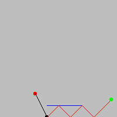

| G107 F '08 |
| General |
| Syllabus |
| Assignments |
| Presentations |
| Ofc Hrs |
| Communication |
| Blog |
| Texts |
| FAQ |
| DrScheme |
Blog

Important Messages from the Instructors
Wednesday, December 10th, 2008
The final code walks are over, the grades are computed, your instructor has escaped to a different world (for now).I thoroughly enjoyed designing and teaching this course. The final code walks demonstrated that all of you learned a lot and that with a few more programming intensive courses you will be able to translate your school knowledge into a profitable profession.
Good bye.
Monday, December 8th, 2008
The final code walks will take place today and tomorrow in rooms WVH 164 and 166. The time slots will be posted next to the doors, with pre-assigned rooms. They should be close to what you signed up for. Due to a miscommunication, they weren't mailed out as announced.
Saturday, December 6th, 2008
I have posted a solution of problem 10.2 for your perusal. You should review this design in case you got penalized for not using abstract classes properly and especially if you didn't fully understand the TA's criticism.
Saturday, December 6th, 2008
I received the following message from the new course evaluation team at Northeastern:"Each student in your course will receive an email announcing that the evaluation is open and describing how evaluations are used. Please announce in your class this week that the online evaluations will be open starting December 7-21, 2008 for student completion and where appropriate, please stress the following points:Students have through December 21st at 11:50 p.m. to complete the evaluations."
- Students should check their email accounts for an email with their login and password to complete evaluation(s)
- You use what students convey in the evaluations to assess and improve your own teaching
- Evaluations are also used to shape departmental curriculum, and in decisions about tenure and promotion for faculty/instructors
- The online evaluations are both CONFIDENTIAL and ANONYMOUS
Friday, December 5th, 2008
The primary goal of the final presentation is for you to show the TAs that you have learned to improve your design and presentation skills, that you have learned from past code walks.
For your final presentation:
For the final project, start with the world and ensure to explain the following critical points from the problem statement in your design: (1) how the worm moves, (2) how the worm eats, and (3) how the worm dies.
Note: Always keep in mind that design happens top-down (from the "world" to its pieces); that coding happens bottom up (and iteratively); and that the presentation is again top-down, according to the design recipe.
Use the design recipe to build a presentation from your code. Plan to use exactly 15 minutes total. Do not expect any guidance from us. We will pick the "starter" and we will tell you when to switch, approximately at the seven-minute mark.
Plan to spend time with your partner on Sunday or Monday to practice these presentations. Each partner should practice the entire presentation.
Use the design recipe to evaluate the code presentations: first data design, then method design. For the former, did the partner explain the interfaces and classes, their purpose and their relationships, and is there a comment on representing and interpreting data? For the latter, did the partner state a purpose, explain critical examples, cover the code, show the tests and demonstrate how they cover all crucial points of the problem statement?
Bring three copies of an up-to-date class diagram to the presentation. Legible, hand-drawn diagrams are acceptable. Bring an index card along so that you can follow through with the design recipe. Of course, it is even better to know the process by heart.
Friday, December 5th, 2008
This past two days we differed on the interpretation of the grading rubric with respect to one point. That is, some of you lost a point if you failed to testevaluatorafter usingsubstituteon an expression. We are now returning this point to your score. (Others did not lose this point and will not receive a point back.)
Friday, December 5th, 2008
For the submission of your final project, please follow these guidelines:
- Include a README.TXT file that tells the TAs how to run the game. If you do not use ProfessorJ and/or Professor Proulx's world framework, you must tell us how to build the game. In this case, you should probably include a make file.
- Document your important examples so that you know which ones you want to point out as special during your presentation. It is often illuminating to place the critical examples (not necessarily tests) next to the purpose statement, as long as they don't overwhelm your code. You may also consider formulating these examples in the world of information not data. Make sure to repeat those examples as tests. Even there, tests are worth little if it's too difficult to see what they mean.
- Reread the problem specification before declaring victory; close attention to detail is important. Identify the ideas that the client will want to hear about during your presentation.
- Reread your code carefully before declaring victory. Is it readable? Is it pretty? Does it meet the structural requirements? Did you exploit all opportunities for abstraction? Did you "hide" all irrelevant details?
Wednesday, December 3rd, 2008
In last night's lecture I mentioned a book that every working software engineer should know. Its title is Design Patterns and its authors are Gamma, Helm, Johnson, and Vlissides; it appeared with Addison-Wesley.
Some people also asked me via email about TCO "tail call optimization" and the people at MIT. In the early 1970s, Carl Hewitt came up with the so-called Actors Model of computation, the first attempt at a theoretical basis for object-oriented programming. The model performs method calls in the proper manner, enabling designers to actually use object-oriented programming (as opposed to for-loop programming borrowed from low-level imperative programming). A couple of years later, Guy Steele and Gerry Sussman derived Scheme from Actors. One of the essential elements they preserved is the correct way to call methods (functions). In the mid 1990s, Guy Steele was also one of the three authors who wrote the specification of the Java programming language. Guy regrets to this day that he couldn't convince Sun to re-introduce TCO into Java.
Another question that has come up is how to proceed from here. For your own benefit, I recommend you take courses in which you can practice the major trade of your profession: program design. Other than that, the College will rework the curriculum over the next few years to ensure a sufficient programming content in all graduate courses.
Tuesday, December 2nd, 2008
Sign up tomorrow for a code walk slot on Monday or Tuesday. The slots are 30 minutes long and come in blocks of 1.5 hours. We will fix the order of the presentations and announce them in a timely fashion. The code walks will take place in WVH 164 and 166.
Tuesday, December 2nd, 2008
I have added a pointer to Prof. Proulx's software libraries to problem set 11.
Saturday, November 29th, 2008
Question:"People who are enslaved by windows unfortunately cannot create a folder called "Aux" :D (specified for keeping scripts). Please give us an alternative name for this folder."Answer: Use the directory nameAuxiliaryinstead.
Friday, November 28th, 2008
Someone asked "Can I take the script from a friend and use it after modifying to suite to our class diagram?" The answer is "of course not!" Scripts, like programs, are code that come with ownership rights, and you cannot ever just copy code. Don't even think about it!
Friday, November 28th, 2008
Here is a frequently asked question (in some form or other):"Can we manually write deeply nested test cases for 10.1 and 10.2 to stress test it, or is it mandatory to use a script to generate nested enums? (It will be really helpful if we can know the levels of nesting expected in both the problems for stress testing)"The answer should be quite obvious. I cannot tell you how large your input has to be to make sense for you. But you need to create large enough entries to know that your program performs in linear time, which means thatdoubling the input size must reliably double the running time (at most).Do not rely on a single run or a single pair of inputs to diagnose your program. Make it run long enough so that you can use your computer's clock to measure the running time. And of course, you're free to construct those inputs by hand; I don't care how much time you spent on constructing inputs.
Thursday, November 27th, 2008
We will use the following tentative schedule on Monday for the "blessing" of the data design diagrams:If your diagram is not approved, you must sit down with your partner and fix the flaws, and return for a second (third, fourth, etc) attempt. So getting your diagram checked early is good. Check back with the blog in case we need to change this schedule.
- 3:30-4:30 Felix
- 4:30-5:30 Jesse
- 5:30-6:30 Christos
- 6:30-7:30 Ryan
Wednesday, November 26th, 2008
I have posted the final code from last night's lecture so that you can peruse it in detail.
The book I mentioned last night is Mythical Man Month by Fred Brooks.
Also, some have asked for a clarification of the meaning of
Showexpressions. First keep in mind that the domain of interest here are the boolean expression notations of programming languages. Second you can make examples of this expression in your favorite language, e.g., Java:See what addingboolean show(boolean b) { println("show: ".concat(String.valueOf(b))); return b; } void main(String argv[]) { println("1: " + (true &amb;&amb; show(!true))); println("2: " + (false &amb;&amb; show(!true))); }(show(true) &amb;&amb; x)does. Or you can try the following in ASL:Also add;; Boolean -> Boolean (define (show b) (begin (printf "show: ~s\n" b) b)) (and true (show (not true))) (and false (show (not true)))(and (show (not true)) x)to the Definitions window and see what happens. Finally, you must learn to conduct this kind of exploration of the "domain" or "world" of interest on your own.
Tuesday, November 25th, 2008
I have added some information to problem set 10. As always, it is marked in blue.
Also note that the purpose of a stress test is to determine whether your code performs its computation with a reasonable amount of space, time, energy, etc. You do not need to predict for stress inputs what the expected output is going to be; by the time you run stress tests, you should have used test cases to establish that your code produces the expected outputs. You should, however, predict some aspect of the resource consumption. For example, when it comes to timing stress tests, you should predict how much time a test case needs. If your code is expected to run in linear time, then doubling the size of the input should double the running time and quadrupling the size of the input should quadruple the running time.
Friday, November 21st, 2008
The full first stage of the assignment is out. Please take a look and get started. It will be due on Monday, December 1, at 10pm.
I have also released the full final project, aka, problem set 11. The first intermediate product is due on Monday, December 1, too, during a special set of office hours. Details will follow on the blog.
There will be no office hours during the week of December 1, other than those on Monday.
I have decided to release the next homework in stages. The first stage is out. It demonstrates the notion of a "stress test" -- with the creation of arbitrarily deeply nested unordered enumerations -- and the creation of a "stress" test with a script. I used ASL (ISL plus display and format) of course to create this script. In a real scripting language, such as Scheme, this script would be even more concise.
Wednesday, November 19th, 2008
As requested, I have posted two pieces from last night's lecture:
Saturday, November 15th, 2008
Now that you have put your worries about problem set 8 to rest I have released a refined version of problem set 9. The additions are in blue, and they do slightly change the meaning of problem 8.3. As you may have noticed, you couldn't solve problem 9.3 with your knowledge of ProfessorJ/Intermediate and HtDC (parts I and II). I have now provided a sufficiently strong specification ofevaluatorso that you can finish the actual design.
Tuesday, November 11th, 2008
A few small changes to the Universe:I have also edited the example section of the documentation of the Universe teachpack to explain this last item.
- Felix suggested an emphasis on the constraints for the hangman server. I have edited the problem statement slightly for that.
- I have also changed
universe2.ssso that the console printer uses the names that registrations may optionally specify.- As Felix and (at least) two students noticed, the distributed ball program didn't quite live up to its specification if you didn't start the pieces fast enough. Why? I was playing with the code as I released it. Don't do that! I have now restored the initial state for both ball worlds so that they start out in a resting state and the ball always moves back and forth as advertised.
Monday, November 10th, 2008
The solutions for problem set 8 should come in the following form:Use8.1/ -- a sub-directory for problem 8.1 design.txt -- the protocol design for the game guess.ss hangman.ss pass-through.ss universe2.ss -- the teachpack 8.2.ss -- the solution for problem 8.2svn mkdirto create the subdirectory.If you are on a Unix box, you may also run the following shell file to run the program to play the hangman game:
To make this work, switch to the Module language and add#!/bin/tcsh mred pass-through.ss & mred guess.ss & mred hangman.ss &to the top of your program. Then save it. Don't use it for designing the program!(require "universe2.ss" htdp/testing)
Monday, November 10th, 2008
- There will be no lecture on Veteran's Day.
- I have made a minor update to the universe2.ss file. Please make sure to download it.
- How to Design Classes is a
required text, which was explained in the first class and which was made available via Northeastern reproduction center at that time. Their store is located around the corner from the NU bookstore. It is entirely inappropriate to ignore the course web pages and to ask other instructors about making the text available.
Wednesday, November 5th, 2008
The third accumulator from last night's lecture is now available. Remember the goal is to understand the choice of usingversus(aux? (locl-def e) accu)Ideally, you come up with a test case that is true for the first choice and false for the second, and a second one that is true for the second choice and false for the first.(aux? (locl-def e) (cons (local-name e) accu))Assume for now that there will be no lecture on 11/11.
Sunday, November 2nd, 2008
We have had several inquiries concerning the difference between problem 7.2 and problem 3.4. Here is a single picture that illustrates the difference:According to problem 3.4, the red ball might have traveled in a single tick along the black line to the black position at the closest obstacle (the bottom wall). There it would have stopped (and switched directions) according to the problem specification. According to problem 7.2, the ball switches directions and continues its journey until it has exhausted its velocity for the one tick. In this example, it travels all the way to the green position, along the red zig-zag line, bouncing four more times.Also do recall that the world library defines the notion of a tick as the number of times the clock ticks per second, which you can specify via big-bang. Your ball-moving function must be able to cope with balls whose velocity per tick is as large as the one described in the picture (or even larger, i.e., it bounces off the right wall, etc).
Saturday, November 1st, 2008
On Tuesday evening, you will choose your next and last programming partner. It has come to my attention that some partners simply refuse to contribute and others refuse to conduct the work according to the guidelines spelled out in class. For this reason, I am giving you an early warning so that you can try to find a new partner of your liking. I recommend you agree on the following three aspects: (1) the design recipe process is the foundation of our work; (2) we prepare ourselves for meetings by doing the drill problems; and (3) being on time for meetings is important.
Some reactions to the code walks this week:
- I have clarified the choices with which you declare your design strategy for homework 7. Please take a close look. I consider it critical for a good software engineer to operate at this level of self-awareness, and I will increase the weight of this criterion for code walks.
- Once again some hints to avoid unpleasant situations:
Just imagine you are working for Google and the other person is a Microsoft employee.
- Do not explain your solution to other students.
- Do not allow other students to copy files from your computer.
- Do not share flash drives or other media, even if you share an apartment.
Tuesday, October 28th, 2008
The program designs from tonight's lecture are available at Experiment and complete the test suites.
Monday, October 27th, 2008
I have released a new version of Problem Set 6. The old one has become Problem Set 7.
The help sessions on mondays and tuesdays will take place in WVH 166 (mondays) and WVH 164 (tuesdays). Remember that the help sessions replace the office hours for these days and that admission depends on your "drill" contributions.
Sunday, October 26th, 2008
After this week's code walk, the TAs have offered to extend their office hours by 30 minutes, as did I. Christos has also split his office hours so that there is an opportunity to meet with a TA late in the day.
The additional office hours come at some cost to you. The TAs will focus their Monday and Tuesday office hours on "drill problems". They will reserve a room and spend significant time working with students through drill problems on an overhead screen. The sessions will be both preparation for working on the homework problems and practice for code walks, without any consequences. To be admitted to this help session, you must have paper evidence of working on the drill problems; otherwise you can't participate. Bringing along an electronic version on a usb stick is good, too.
You may not ask any questions about homework problems on Monday. The Tuesday session may spend a small fraction of the time on advice for homework, depending on the TA's discretion.
Monday, October 20th, 2008
My teaching assistants pointed out two flaws in the extended exercise set 27. I have added language to problem statement 5 in blue to correct those issues.
Saturday, October 18th, 2008
Ryan C. has moved his office hour to 10:00am--11:30am to accommodate your schedule. In general, let me encourage you to seek help from the TAs when needed.
I have made some small, mostly cosmetic changes to problem set 5 to clarify the overall purpose and to eliminate a potential confusion.
Friday, October 17th, 2008
Over the course of the week and after watching some code walks, I have realized that just under half the students in class are confusing two distinct ideas: the creation of abstractions vs. the use of existing abstractions.The creation of abstractions starts with the discovery that two (or more) existing functions, lines in a conditional, test expressions are structurally similar. You then use the abstraction recipe to create one common function to cover both cases.
The use of existing abstractions concerns what happens after you have created abstractions or after you have discovered that the language/library implements abstractions of common patterns. The best time to discover this connection is when you formulate the template (even if only in your head).
You will need to work on these skills if you wish to become an excellent programmer.
Saturday, October 11th, 2008
Your homework efforts and your code presentations are not a fight against some anonymous system. They are your chance to improve your software design efforts based on our feedback. The diagnostics we used in the first two weeks for near-trivial problems suggests that 70-80% of the students in this class are in dire need for such self-improvements. Use your chances.
In this spirit, I must make two specific points:
- We have noticed some "peculiarities" in homework submissions. Remember that we will think of you as thieves if we find that your code and the code of some other pair are (near) identical, and do keep in mind that it comes much easier to help out honest people than thieves. Some of you will receive a detailed explanation of this point.
- I also noticed some disrespect for the teaching assistants and their explanations during this week's code walks. You must understand that these teaching assistants are the very best that this college can offer for this crucial course. They fully understand the material; they have taught this material numerous times; and they have my full trust. Do not interrupt their explanations in the future!
I have made a small, clarifying change to problem 4.4 (on balls).
To help some of you with problem 4.2, I am also providing an adequate data definition for problem 3.1:
With polymorphic data abstraction, we can express this definition more succinctly with:(define-struct join (lft rgt)) ;; Mobile is one of: ;; -- Number ;; -- (make-join LOM LOM) ;; LOM is one of: ;; -- empty ;; -- (cons Mobile LOM)This is important for those of you who created inadequate representations or representations that make it extremely difficult to use existing abstractions.(define-struct join (lft rgt)) ;; Mobile is one of: ;; -- Number ;; -- (make-join [Listof Mobile] [Listof Mobile])A data definition is adequate if you can easily represent information with the data. Here is, for example, the representation for the right-hand side mobile from the problem statement:
Conversely, given a piece of data you should be able to interpret it as information. In this spirit, draw the mobile represented by(make-join (list 7) (list 3 (make-join (list 2) (list 2))))(make-join (list (make-join (list 4) (list (make-join 1 1) 4))) (list (make-join (list (make-join (list 1 1) (list 2))) (list (make-join (list 2) (make-join (list 1) (list 1)))))))
Thursday, October 9th, 2008
We initiated the partner exchange for problem set 4 on Tuesday. Some of you missed the lecture. You must get in touch with the teaching assistants as soon as possible to get a new partner. You may not turn in homework without a partner and you will lose all credit for problem set 4 if you don't have a partner.
Tuesday, October 7th, 2008
DrScheme version 4.1.1 was released. Please download and work with it instead of version 4.1.
Monday, October 6th, 2008
One of my teaching assistants suggested an improvement to problem 3.1, including some pictures that demonstrate what "balanced mobile" means here (not real physics, just arithmetic).
Sunday, October 5th, 2008
For code walk 2, we used the following grade distribution:
- 1 point for test coverage
- 3 points for basic style issues;
- 8 points for proper design;
- 6 points for presentation and poise; and
- 2 partner points.
For the next code walk, we will use a slightly different approach to separate the properties of the code base from those of your presentation. We will approximately divide the point allocation so that nearly half the points are for the code base and nearly half for the presentation itself. The points for the code base will be averaged between the partners; the presentation points remain personal. We will continue to allocate 10% of the points for "partner performance".
Friday, October 3rd, 2008
Shyam has pointed out a minor flaw in Problem 3.3 and overly concise prose in Problem 3.4. I have released revised versions this Friday afternoon.
During code walks I am still seeing many solutions that don't even try to live up to the style sheet rules. If you do not follow these rules, you are almost automatically devaluing your grade to a B-level score.
Wednesday, October 1st, 2008
I have made minor adjustments to the text of problem set 2, because the wording may have been confusing.
Friday, September 26th, 2008
Here are some first reactions to the "code walks" on Thursday and Friday:
- I have put up a style guide for programs. I had wronly assumed that your undergraduate institution instilled such sensibilities.
- Please study the following and compare them to yours: Solution for Problem 1.2 and Solution for Problem 1.4.
- Finally, here are the grading guidelines for the first code walk. If your code is designed according to the design recipe (at a min. HtDP, page xviii) and presented in the same manner, you will have no problems getting an A-level grade for such a code walk. Believe it or not, following the design recipe actually helps you with programming, too.
Thursday, September 25th, 2008
The Assignments site now contains some essential hints concerning the Subversion server and especially on checking whether your homework exists there.
Wednesday, September 24th, 2008
Notice From now on, the teaching assistants and I will not assist students who do not use the design recipe. If you have questions, you must formulate them in terms of the design recipe. Typically such questions are phrases as "I have done the first N steps of the design recipe but I am stuck with step N+1." Based on past experience, I suspect that another typical question is "I am stuck with the template. How do I get from the data definition to the template again?"
In addition, the teaching assistants and I will not assist students who are obviously not working through the book at the required pace. Keep in mind that I am not asking you to just read the book, but to read and do the exercises (except those that involve the draw teachpack; you may wish to tackle them with the world teachpack instead but they may not be as useful pedagogically). Daily practice with the book and DrScheme will ensure that you don't trip over simple syntactic issues.
Friday, September 19th, 2008
Reminder: If you wish to volunteer for any lectures, you must send me email by this Sunday.
Reminder: The code presentations take place instead of 108 lab sessions. We will have only one more lab session, with ample warning.
Wednesday, September 17th, 2008
It has been brought to my attention that neither NEU nor myNEU specifies that the labs take place in West Village H 211. See you there.
Wednesday, September 17th, 2008
The first lab (108) will not be a grading session. It will provide a hands-on introduction to DrScheme, its documentation system, and the World teachpack. The TAs will also assign you a partner and will introduce you to our notion of pair programming.
Do bring along your time and travel constraints for the next few weeks so that you and your partner can meet after the lab and agree on a first meeting.
You must attend the lab for which you signed up. The TAs will have rosters and ensure that only students enrolled in the lab participate.
Finally, please see the Presentation tab for my evaluation of yesterday's code presentation (walk).
Monday, September 8th, 2008
Welcome to the brand new "Bootcamp" course, formally known as CS G 107/108.